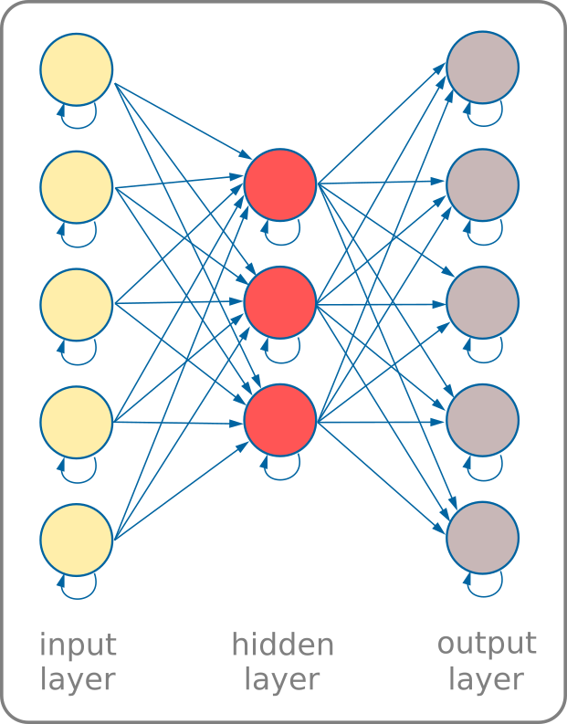

hidden: defines the number and size of the hidden layers, should be in the format: [n]; where n is 1 or more integers
mechanism: defines the survival criteria
size: size of the board, probably just leave it alone
count: number of nubs in each generation
generation: how many turns does each generation live
perFrame: controls how fast the simulation runs vs the display, higher is faster
maxSurvival: cut-off point at which the simulation halts
maxGenerations: maximum number of generation before halting the simulatinon
Be sure to hit the "evo" button to make the changes take effect.
The biggest thing to play with is the number and shape of the hidden layers!
A bigger brain may be better, but it is also takes longer to train...
wat in the wat?
A fair question!
What's going on here? The short answer is the real-time evolution of primitive brains in your browser.
Each "nub" in the population has a neural network in the classic full mesh configuration with some quirks.
Each node in all the layers (including the input and output layers) have recurrent bit to potentially keep part of their last state:

Here's how the simuation works:
every weight in each nub's brain is given a random value
a number of iterations are run (see below) until the generation is over
a fitness criteria is used to pick survivers, typically being in a "safe" area of the screen
the survivers are used to create the next generation of nubs (see below)
the process continues until either the maximum number of generations or survival percentage is achieved
Each iterations proceeds as follows:
each nub's input layer is set based on conditions in the environment (see below)
forward propagation occurse by performing matrix multiplication throughout the layers
the output layer decides which of the 8 compass directions to move
Each generations is created from the "survivors" from the previous generation like so:
each generation has the same count of nubs
for each new nub, 2 random parents are picked
the new nub's values for every weight, bias, layer and setting is determined by:
random value (based on mutation chance)
50% parent A value
50% parent B value
The hope is that the survivors will pass on
the mental characteristics to their offspring
allowing them a better shot at survival
Is this real?
As crazy as it may seem this little demo is small
evolutionary model based on randomly initialized
neural networks which struggle and adapt their
behaviour for survival.
You may see flocking behavior like birds,
jumping like insects or crawling like worms!